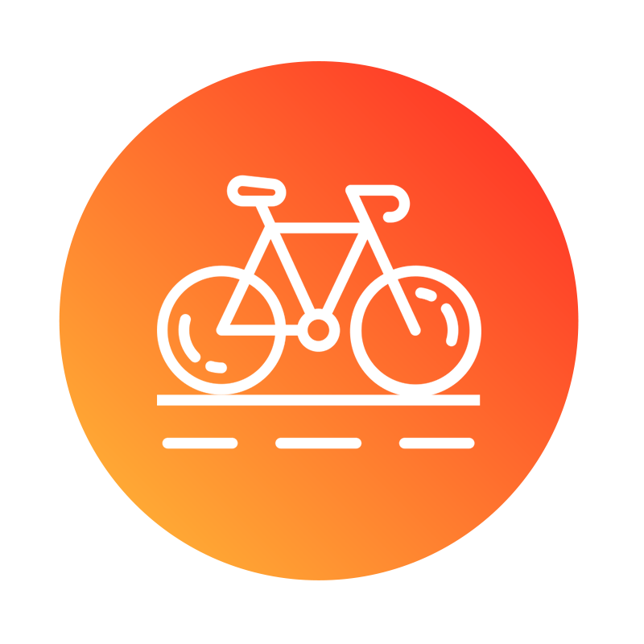
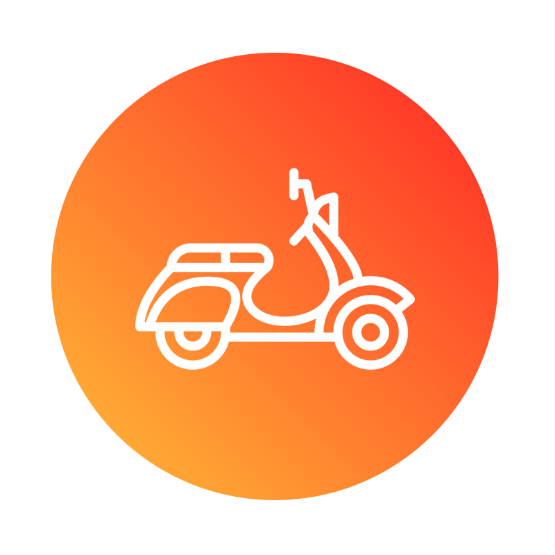
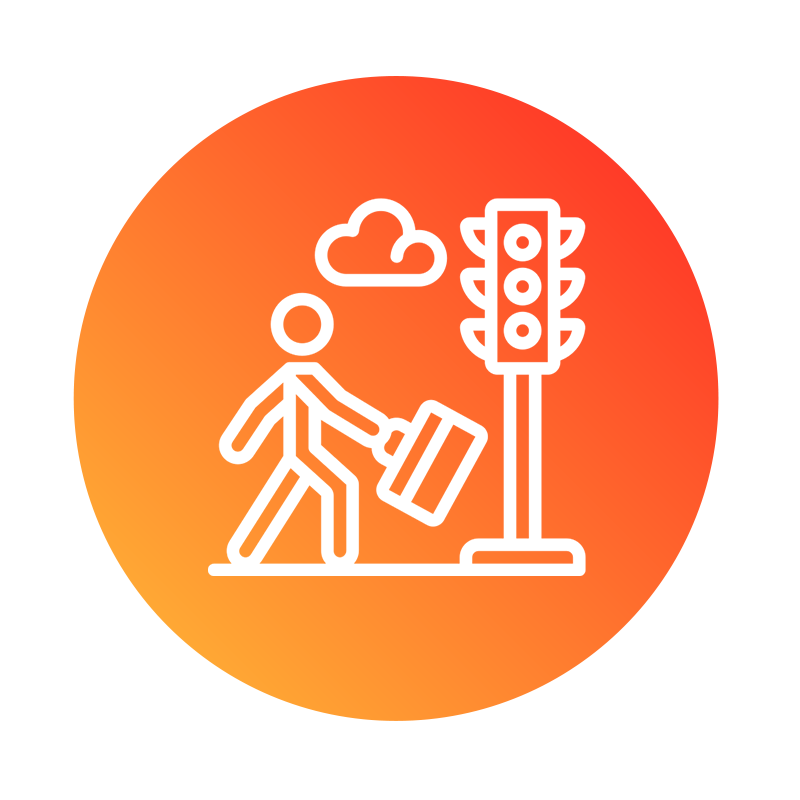

Road Eye
Road Eye App
Inicio
Autobús
Automóvil
Avión
Bicicleta
Motocicleta
Peatón
Cerrar Sesión
¡Hola! Bienvenido a RoadEye App, escoge la categoría a visualizar para el día de hoy
Automóvil
En este indicador podrás revisar los datos totales de personas lesionadas por alguna situación al conducir.
Autobús
En este indicador podrás revisar los datos totales de personas lesionadas por alguna situación concreta al viajar/trasladarse en autobús.

Bicicleta
En este indicador podrás observar los datos totales de personas lesionadas en bicicleta

Motocicleta
En este indicador podrás observar los datos totales de personas lesionadas por alguna situación concreta al conducir una motocicleta

Peatón
En este indicador podrás observar los datos totales de personas lesionadas por alguna situación concreta al transitar en la calle.
Avión
En este indicador podrás revisar los datos totales de personas lesionadas por alguna situación al conducir.